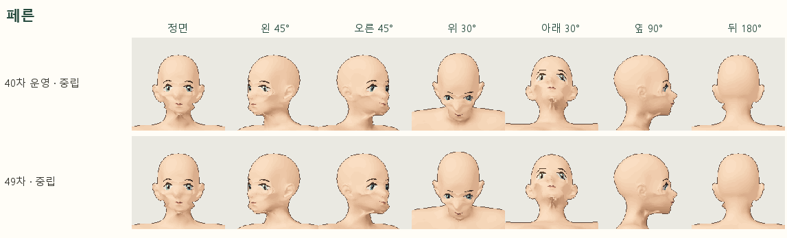
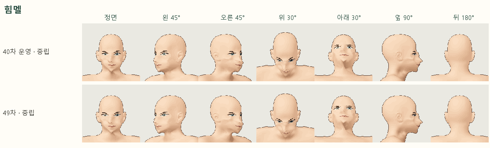
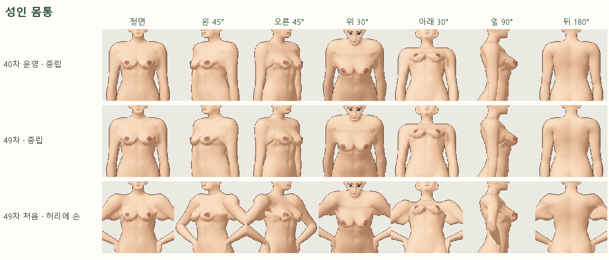

승인할 때 보게 될 모습
남녀 2~8등신 14개를 같은 발바닥 기준선에 두고, 어느 한 명을 48픽셀에서 알아본 뒤 원하는 방향과 자세로 돌려 보고, 직접 바꾼 얼굴과 몸을 다시 열어 같은 모습으로 복원할 수 있다.
2~4등신은 큰 머리를 발과 골반이 받쳐 준다. 사선에서도 눈이 얼굴 밖으로 밀리지 않고 옆과 뒤에서도 같은 캐릭터의 무게중심이 느껴진다. 5~8등신에서는 눈을 감거나 웃어도 두개골과 안와의 위치가 유지되고, 턱에서 귓밑을 지나 목 뒤로 이어지는 면이 돌아가는 내내 끊기지 않는다. 6~8등신 일본 만화형은 따로 비교할 수 있다. 성인 몸통은 팔을 내린 상태와 머리 위로 든 상태에서 쇄골·겨드랑이·옆가슴·등이 함께 움직인다. 정면에서 보인 접힘은 사선과 측면에서 같은 피부 위의 선으로 이어진다.
정범님이 기본형별 원화 겹침, 실제 크기 회전, 자세, 변형의 최소·중간·최대와 조합, 저장·복원 결과를 열어 직접 승인하실 때 해당 기본형을 완료로 기록한다. 원형의 승인과 변형 범위의 승인을 각각 남긴다. 49차는 피드백의 기준판이다. 독립 원본이 없는 면은 공간적 연속성만 판정할 수 있다.
49차에서 무엇이 어긋났나
각 도판의 윗줄은 40차, 다음 줄은 49차 중립이다. 조명·자세·배율을 고정한 우리 모델의 비교 그림이다. 수정 후보의 원화 오차는 아래에 따로 적었다.



두 얼굴의 후보 검사는 11방향과 48·192픽셀에서 이루어졌다. 수정 후보에서 원화 조건 하나가 좋아진 것, 인물 전체가 닮은 것, 사람이 그 인물을 알아보는 것은 각각 따로 확인해야 한다. 세 후보를 기본값으로 채택하는 근거는 아직 부족하다.
시점의 이름도 검사한다. 힘멜 설정 2·4의 맞춤 좌우각은 약 −41도와 +56.5도였다. 정면에 가까운 컷까지 일괄 45도로 두면 원화의 원근 차이를 모델 변형으로 메우게 된다. 지정하신 몸통 기준은 Wallner 연구의 3D 모핑 도판 전반이다. 해당 논문에서 바꾼 것은 상·하부 비율과 윗부분 돌출 등이다. 실제 인체에서 팔의 움직임에 따른 피부 이동과 중력 변형은 별도 자세 원본으로 확인해야 한다. Wallner 연구와 도판
같은 후보의 시점별 실측
작업 재개 · 정면과 옆면을 함께 맞춘 턱 교정
기준과 폭·깊이를 달리한 8개 후보를 페른·힘멜 각각에 적용했다. 후보를 고를 때부터 정면의 좌우 피부 끝, 사선과 측면의 턱 가시선, 힘멜의 턱에서 목으로 꺾이는 점을 동시에 측정했다. 각 조건의 오차를 모두 유지하거나 줄인 후보만 별도 컷으로 비교했다. 같은 모델의 48픽셀 렌더를 10방향에서 다시 그렸다.
페른은 볼·턱 폭 전체 교정에서 정면 오차가 10.049→8.783 도판 픽셀로 줄었다. 그런데 실사용 48픽셀 정면에서 바깥 윤곽이 달라진 화소는 0개였다. 반강도는 따로 둔 기존 9화 컷에서 4.808→4.871로 악화했다. 힘멜은 반강도에서 정면 오차가 4.521→4.336으로 줄었으나 측면의 턱·목 합류 오차는 19.662 도판 픽셀이 그대로였다. 정면에서 바뀐 외곽은 한 화소였다. 두 인물 모두 계속 고칠 대상으로 남겼다. 다음 수정은 페른의 볼에서 실제 실루엣을 만드는 피부와 힘멜의 귓밑에서 목으로 내려가는 표면을 원화 위에서 다시 특정하는 것이다.
부위별로 남은 작업
앞의 세 사례는 확인한 결함이다. 아래에는 완성 판정을 받으려면 채워야 하는 범위와 아직 판정 자료가 부족한 조건을 함께 적었다.
- 참고와 카메라
- 원화의 인물·컷·표정·렌즈/원근·좌우·상하·기울기를 기록한다. 양쪽 눈끝, 귀, 턱끝, 입꼬리 등 관측 가능한 표점과 실루엣을 맞춘다. 머리카락 아래 가려진 눈, 피부 내부 음영, 실제 바깥선은 각각 따로 표시한다. 같은 자료를 확대·반전한 경우 같은 원본으로 취급한다. 뒤·정수리·턱밑은 같은 인물의 자료가 확보된 각도만 정답으로 쓴다.
- 등신과 지지
- 남녀 각 2·3·4·5·6·7·8등신을 별도로 본다. 머리길이, 목 길이, 어깨·골반 폭, 몸통 깊이, 팔·다리 길이, 무게중심과 발바닥 접지를 확인한다. 작은 등신은 큰 머리를 아래에서 볼 때 턱이 몸통과 합쳐지지 않는지, 올라간 팔이 얼굴을 가릴 때에도 실루엣을 읽을 수 있는지 본다. 큰 등신은 흉곽과 골반의 기울기, 배와 허리·엉덩이의 곡률이 앞뒤에서 같은 구조를 설명해야 한다.
- 얼굴 바탕
- 정수리·뒤통수의 깊이와 폭, 관자와 이마, 미간과 눈썹뼈, 광대·볼, 턱각과 턱끝, 턱밑과 목 앞·뒤·귀 뒤의 단면을 점검한다. 턱끝 하나를 옮길 때 반대편 볼과 정면 너비를 보호하고 위·아래에서 얼굴이 납작해지는지 함께 본다.
- 이목구비와 표정
- 안구와 안와의 깊이, 양쪽 눈 간격, 위·아래 눈꺼풀 두께와 곡선, 홍채 가림과 눈썹을 묶어서 본다. 콧대·코끝·콧방울, 인중·윗입술·입술 틈·아랫입술·턱끝, 귓바퀴·귓구멍 주변·귓불의 부착 높이를 교정한다. 깜빡임·시선·입 벌림·미소 시 중립 인물의 정체성을 보존한다. 머리카락과 헤어라인은 가림 점검용 견본을 먼저 쓴다. 예정된 얼굴형 20개와 눈·코·입·귀 각각 20개 이상을 혼합할 때의 연결도 검사한다.
- 어깨와 팔, 손
- 쇄골, 견갑골의 회전, 어깨 높이, 삼각근과 가슴·등의 연결, 겨드랑이 주름, 위팔과 아래팔의 굵기, 팔꿈치 돌기·손목·손바닥·손가락 관절의 회전축을 확인한다. 팔 들기·앞으로 뻗기·뒤로 보내기·팔꿈치 굽히기·손바닥 뒤집기를 결합하고 어깨가 솟거나 피부가 비틀릴 때 어느 관절의 영향을 받은 것인지 기록한다.
- 성인 몸통과 가슴
- 정범님이 지정한 도판 전반의 유형을 크기 변화의 기준으로 삼는다. 기저 폭·높이, 흉벽 부착, 상부 기울기, 최대 돌출, 하부 무게와 밑주름, 중앙 간격·좌우 차이, 겨드랑이 연결, 유두·유륜 표면의 위치·방향을 구분한다. 기본형 외 선호 원본에서 고른 20종은 각각 정면·사선·측면 중 관측한 자료를 표시한다. 남녀 표시 토글과 성인 여성의 유두·유륜 크기·형태가 함께 회전하는지 본다. 정적인 형태 변형과 움직임의 지연·감쇠를 별도로 검증한다.
- 골반과 다리, 발
- 배꼽과 허리에서 장골능·골반으로 이어지는 면, 둔부와 대퇴 부착, 허벅지 안팎, 무릎뼈, 종아리, 복사뼈·뒤꿈치·발등·발가락을 확인한다. 깊은 스쿼트, 한 발 지지, 다리 벌리기, 발끝 올리고 내리기와 몸통 비틀기를 비교한다. 반대 다리와의 간섭, 눌림과 벌어짐, 바닥 미끄러짐을 본다.
- 계속 돌아가는 표면과 관절
- 중립, 팔 68·90·178도, 허리에 손, 한쪽만 들기와 복합 자세를 별도 장면으로 둔다. 동작에 따라 관절의 축이 이동하는 곳과, 사람마다 다른 가동 범위를 기록한다. 한 각도 숫자를 모두에게 적용하지 않는다. 삼각면 뒤집힘, 자기 관통, 심한 늘어남, 관절 부피 소실, 법선 이음매와 명암 깜빡임, 손발이 잘리는 구도를 점검한다. 선택 해상도에서 마우스로 천천히 회전하다 멈춘 순간까지 비교한다.
- 체형·화풍 변형
- 등신마다 마름과 체지방량, 지방의 분포, 근육량, 나이, 체간 길이·폭·깊이, 가슴·허리·엉덩이 비율이 섞이는 범위를 잡는다. 5~8등신에서는 계획표의 남녀 각 32개 대표 체형과 새 조합을 시험한다. 6~8등신의 남녀 일본 만화형은 별도 기준 그림으로 비교한다. 최소·중간·최대, 서로 충돌하는 두 축을 같이 바꾼 경우, 관찰하지 않은 조합까지 확인한다. 형상을 바꿔도 뼈·눈·귀·의상용 부착점이 피부를 따라야 한다.
- 해상도·보존·판정
- 48픽셀에서 눈매·입매와 성격을 알아보는지 확인하고, 96·192픽셀과 확대 화면에서 외곽·면·명암의 원인을 본다. 같은 조명과 카메라의 360도 회전과 기울임, 고정 45도 격자와 사이 각도, 조명을 옮겼을 때를 점검한다. 취소·되돌리기·다시 열기 후 값과 실제 렌더를 대조한다. 이전 판과 후보의 근거, 악화한 시점, 사용하지 않은 독립 원화, 정범님 판단과 복구 위치를 함께 남긴다.
그리기 엔진이 한 후보를 다루는 방법
- 입력마다 시점·표정·자세·관측 가능한 부위·권리를 기록한다. 먼저 선을 원본에 겹쳐 배경 경계, 가림 경계, 음영으로 분류한다.
- 후보 하나는 모든 카메라가 공유하는 같은 형상과 포즈다. 후보마다 정면·양 사선·양 측면·후면·위·아래에서 다시 그린다. 미리 다른 카메라의 결과를 띄워두고 수정한다.
- 각 관측선의 오차, 가장 나빠진 방향, 변화시키지 않을 부위, 면 뒤집힘, 자세별 접힘을 따로 기록한다. 도판 픽셀, 렌더 픽셀, 휘도와 각도를 단순 합산하지 않는다. 판독 오차보다 작은 차이는 미결로 남긴다.
- 작업에 쓰지 않은 별도 촬영·원화에서 같은 시험을 한다. 자료가 없는 면은 추정과 연속성 검토로 표시한다. 모든 관측을 만족해도 사람이 실제 크기에서 자연스럽게 느끼는지 마지막으로 확인한다.
- 충돌이 있으면 후보, 입력, 실패 근거를 보존한다. 새로 배운 수정 규칙은 다른 인물·등신에 적용해 다시 확인한다. 연구 후보 저장과 기본형 승인은 서로 다른 기록이다.
다음 작업과 통과 근거
- 기준을 동결한다. 웹앱의 회차·자세·조명·카메라·실제 픽셀과 원본을 같은 조건으로 저장한다. 49차 중립과 허리에 손을 댄 상태를 구분해 이전 선택을 재현한다.
- 원본의 선을 먼저 교정한다. 페른·힘멜, 성인 몸통에서 각각 한 묶음을 정한다. 서로 다른 각도에서 읽히는 기준점과 가려져 읽히지 않는 점을 표시한 겹침을 먼저 검토한다. 그 선이 틀리면 표면 보정으로 넘어가지 않는다.
- 큰 덩어리와 깊이를 맞춘다. 얼굴 폭·볼·턱·목, 흉곽 부착과 하부 곡률을 고친다. 각 편집 전후에 10방향을 함께 보고 26방향으로 세밀하게 확인한다. 눈꺼풀·입술·몸통 명암은 큰 형태가 안정된 뒤 같은 루프에서 맞춘다.
- 48픽셀과 다른 자세로 반증한다. 후보·기준·원본을 같은 시야에서 대조하고, 익숙하지 않은 각도·표정·팔 자세를 추가한다. 가장 좋아진 컷과 가장 나빠진 컷을 함께 보고 그 이유를 남긴다.
- 14개 원형으로 넓힌다. 작은 등신과 성인형은 목표 인상이 다르므로 각자의 참고와 지지 자세로 다시 맞춘다. 고정 8×8 입력은 14개에서 896개 카메라 설정이다. 극점의 중복 투영과 실제 연속 회전은 따로 본다.
- 변형을 시험한다. 선행 모사인 남녀 얼굴 각 20개와 성인 가슴 20개의 독립 대조, 대표 체형, 이목구비 조합과 복원이 남아 있다. 새 사례에도 재현되는 축을 채택하고 실패하는 범위는 명시한다. 선행 모사 이후 회차 안에서 얼굴·가슴 3, 다른 요소 7의 배분과 직전 요소와의 조화를 기록한다.
- 기본형과 변형을 각각 승인받는다. 같은 웹앱에서 원화·회전·자세·저장 복원과 미해결 항목을 검토한다. 이후 머리카락·재질·옷·장비와 동작 제작, 친구 한 명의 하루, 기기 이동, 친구 둘의 상호작용, 활동 콘텐츠 순으로 확장한다.
완료일은 독립 원화의 확보, 48픽셀에서 남는 오류, 정범님의 시각 승인에 달려 있다. 첫 세 모델에서 몇 차례의 수정이 실제로 통과하는지 기록한 뒤 14개로 확대하는 기간을 다시 산정한다.